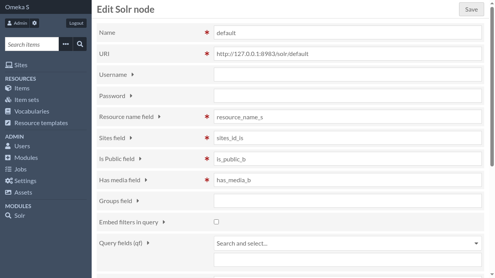

Node settings

- Name
A descriptive name for this node
- URI
URI of the Solr collection/core
- Username
Username for basic authentication, if enabled
- Password
Password for basic authentication, if enabled
- Resource name field
Name of the Solr field that will contain the resource name (or resource type, e.g. “items”, “item_sets”, …). It must be a single-valued, string-based field.
WARNING: Changing this will require a complete reindexation.
- Sites field
Name of the Solr field that will contain the sites ids. It must be a single-valued, integer-based field.
WARNING: Changing this will require a complete reindexation.
- Is Public field
Name of the Solr field that will contain the isPublic flag. It must be a single-valued, boolean-based field.
WARNING: Changing this will require a complete reindexation.
- Has media field
Name of the Solr field that will contain the hasMedia flag. It must be a single-valued, boolean-based field.
WARNING: Changing this will require a complete reindexation.
- Groups field
Name of the Solr field that will contain the groups ids. It must be a multi-valued, integer-based field. Only useful if the module Group is enabled.
WARNING: Changing this will require a complete reindexation
- Embed filters in query
If checked, filters are embedded into the query and impact results score
- Query fields (qf)
qf parameter that will be added to the query
This is the list of fields that will be used when no fields are explicitely used.
Used by the ‘Search everywhere’ feature of the Search module.
- Minimum should match (mm)
mm parameter that will be added to the query
Highlighting
- Highlighting
Enable extract retrieval in relation to search terms
- Highlight fields
Fields used for the highligthing feature (use “*” for all fields).
- Highlight fragment size
Define number of caracters for the fragment size of highlight, 0 will show the entire field value.
- Highlight snippets
Define the number of fragments where the search terms were found in the same field.
- Maximum characters analyzed
Set the value of hl.maxAnalyzedChars parameter. Great values can have impact on performance